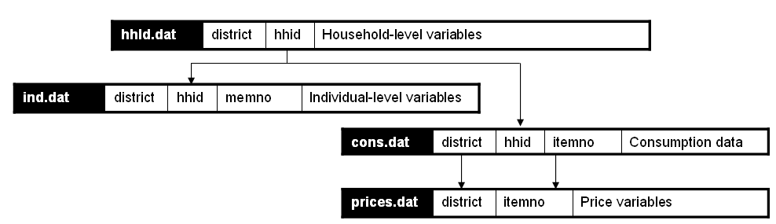

5. Importing data and establishing relationships¶
After all data and documentation files are gathered and checked, import the data files in the Editor. In the Metadata Editor, order the files in a logical fashion (e.g., sequentially through sections).
Note
If you are documenting a population census and have very large data files, it is recommended to split the files by geographic area. Typically, you will have a file at individual level, one at the household level, and possibly one at the community level, for each State or Province. In such case, import all files for one State or Province only. You will import the other data files after you complete the documentation of the files. This will considerably reduce the time needed to save your files. The Metadata Editor will allow you to replicate the metadata from the documented files to all other data files that you will import later.
After all files are imported and ordered in a proper sequence, define the key variables for each data file. The base key variable(s) in a data file is (are) the variable(s) that provide the unique identifier of each record in that specific data file.
Then establish the relations and validate them using the Tool > Validate Dataset Relations in the Editor. This automatic validation is a way to check the structural integrity of the identifier variables and assure there are no duplicates in the data.
Establishing relationships – An example |
|---|
In this example, we assume that the dataset is obtained from a household budget survey and comprises:
|
|  |
In the Metadata Editor, these relationships will be established as follows in the “Key variables and relationships” section of each data file: |

|
If you have imported your data from any format other than fixed ASCII, re-sequence the data using the Variables > Resequence option in the Editor. This re-sequencing tool will automatically fill the “StartCol” and “EndCol” columns in the variable description section. This must be done for each data file.

Before going further, quickly browse all variables in all data files to visually check the frequencies. This will allow you to easily spot some outliers or invalid codes, which will require recoding (which can be done in the Editor or in the source data files which will then have to be re-imported).

Save the project. The Editor saves the full project, the associated data and documentation in one zip file. We recommend you save the project using the survey abbreviation, year and version number as project name (e.g., UGA_2018_HIES_v01_M). Note that it is good practice to avoid using spaces in a file name (use underscore characters instead).